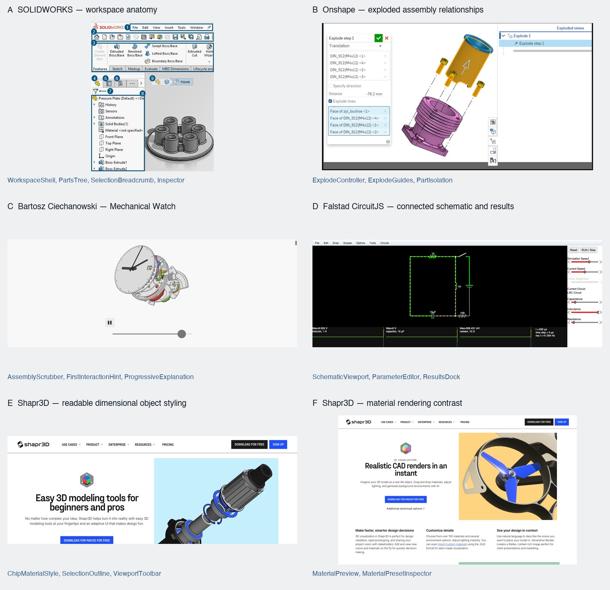

Qubit Studio
Reference anatomy
A CAD workspace that makes a complex object understandable through manipulation. Each reference has a specific role, observed evidence and explicit limits. This is not a final UI mockup.
Model handoff prompt · Evidence and source notes

A. SOLIDWORKS — workspace anatomy
Open original source ↗{kind=link}
{kind=link}
Evidence: Official documentation images extracted from the loaded page and visually inspected. Not a live SOLIDWORKS session.
Observed: Top command hierarchy, named feature tree on left, neutral gray graphics area, outlined solid geometry, contextual selection breadcrumb and a docked task pane.
Borrow: Stable workspace: compact top tools, collapsible named Parts tree, large viewport, docked selected-part Inspector. Maintain clear selected-part identity.
Avoid: Full legacy ribbon density, tiny icon-only commands, mechanical CAD operations unrelated to the simulation. Do not copy the documentation site's red header.
Component: WorkspaceShell, PartsTree, SelectionBreadcrumb, Inspector
B. Onshape — exploded assembly relationships
Open original source ↗{kind=link}
Evidence: Official help text and embedded screenshot inspected; assembly editor not operated.
Observed: Separated colored components remain aligned; dashed explode lines preserve attachment relationships; an explode-step editor and named explode hierarchy are visible.
Borrow: Deliberate separation paths, connector lines, selection while separated, named components. Our simplified version uses one continuous assembly slider rather than an authoring panel.
Avoid: Random scattering, cinematic debris, treating exploded positions as physical simulation edits, requiring users to author explode steps.
Component: ExplodeController, ExplodeGuides, PartIsolation
C. Bartosz Ciechanowski — Mechanical Watch
Open original source ↗{kind=link}
{kind=link}
Evidence: Live WebGL illustration rendered. Slider dragged with browser mouse events and separated state visually verified. Orbit behavior described by source; not independently tested here.
Observed: One large outlined 3D object on a quiet pale field; one slider reveals internal layers; consistent view preserves orientation; colored internal parts distinguish mechanisms.
Borrow: The primary interaction reference: assembled-to-separated scrubbing, inspectable internals, restrained controls, progressive explanation around the object. A novice can act before knowing vocabulary.
Avoid: Copying a long article as the app layout, auto-scrolling narrative, color-coding every surface without purpose. Watch construction is not a chip blueprint.
Component: AssemblyScrubber, FirstInteractionHint, ProgressiveExplanation
D. Falstad CircuitJS — connected schematic and results
Open original source ↗{kind=link}
Evidence: Live default LRC circuit rendered with schematic, controls and scope traces. Parameter-response behavior not independently exercised in this pass.
Observed: Large central circuit, right-side parameter sliders, aligned bottom scope plots; labels and results share a single workspace.
Borrow: Schematic plus controls plus results in one spatial frame. Our 3D and schematic selections share a single state; results stay visible during edits.
Avoid: Retro typography, black/neon styling as a default, electrical current animation applied to quantum states, generic waveforms that do not come from the model.
Component: SchematicViewport, ParameterEditor, ResultsDock
E. Shapr3D — readable dimensional object styling
Open original source ↗{kind=link}
{kind=link}
Evidence: Official marketing illustration and tool-label artwork inspected. Not a screenshot of the complete working editor; support workspace page blocked by Cloudflare.
Observed: Exploded mechanical illustration uses dark edge lines, gray solids and blue accent parts. Separate artwork shows compact icon-plus-text modeling labels.
Borrow: Readable object edges, restrained shading, accent reserved for meaningful parts, compact controls with text labels. Use as rendering and control-treatment reference only.
Avoid: Claiming this proves an adaptive inspector workflow; copying marketing page composition, introducing Extrude/Loft tools without a geometry model.
Component: ChipMaterialStyle, SelectionOutline, ViewportToolbar
F. Shapr3D — material rendering contrast
Open original source ↗{kind=link}
Evidence: Official page and rendered product image inspected. Material drag/drop is stated in source copy, not interacted with; screenshot does not expose a material picker.
Observed: Visibly distinct black frame, bright blue blades and pale metallic supports; restrained highlights separate material surfaces.
Borrow: Material appearance should communicate distinct surfaces without drowning the object in reflections. Our inspector may preview named material presets; that picker is a proposed component, not a copied observed UI.
Avoid: Treating photorealism as scientific accuracy, confusing appearance changes with calculated electrical effects, copying the yellow marketing background.
Component: MaterialPreview, MaterialPresetInspector
Use the pack
Upload the board, handoff prompt and source notes. Add full-size screenshots for detail. Local filesystem paths alone do not let a cloud chat model read your files. Keep references as inspiration, not production assets.
Primary recipe: SOLIDWORKS structure; Mechanical Watch manipulation; Onshape assembly guides; Falstad linked results; Shapr3D rendering restraint.